Seven runnable Julia notebooks with figures from actual execution and MATLAB validation assertions. Each notebook identifies real 3-D data, synthetic 4-D cases, actual LLC topology, and recorded performance measurements.
MATLAB-verified periodic boundaries, splits, and merges; two different 3-D event definitions.
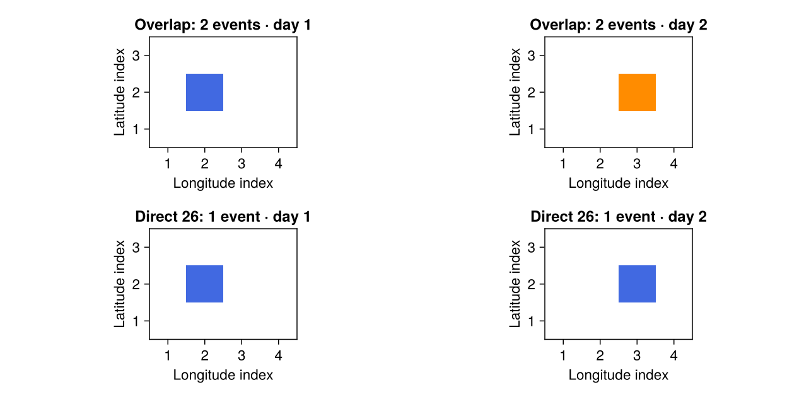
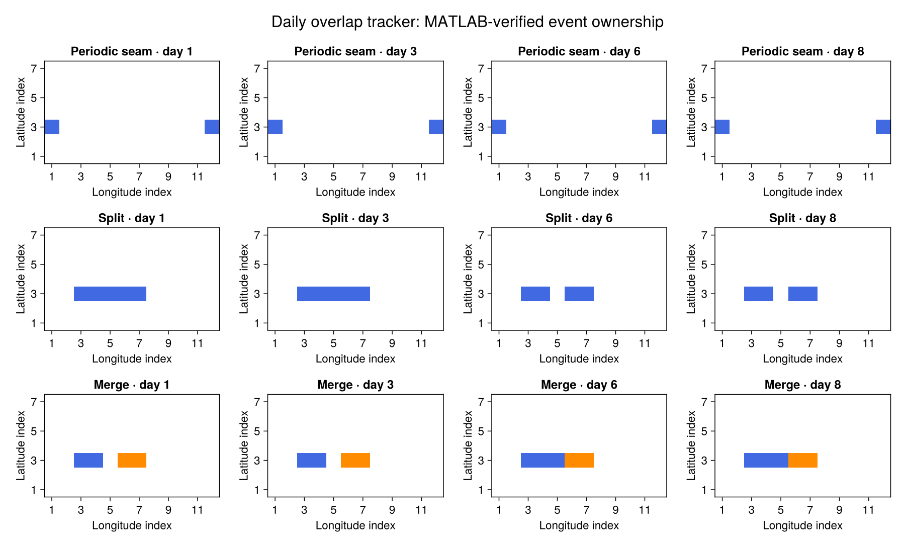
400×160×731: occurrence frequency, event statistics, and real event evolution.
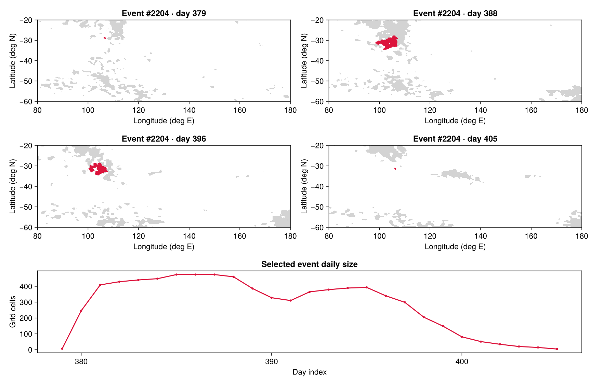
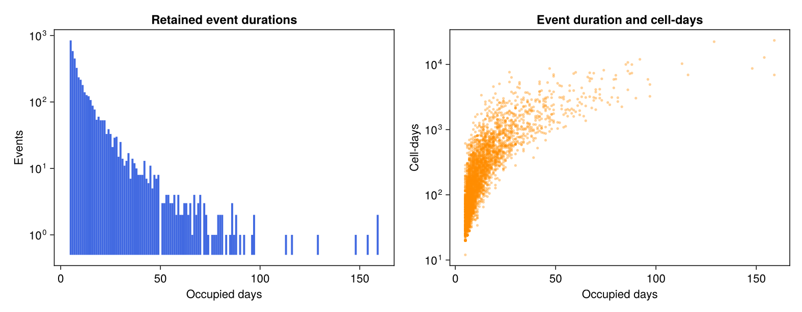
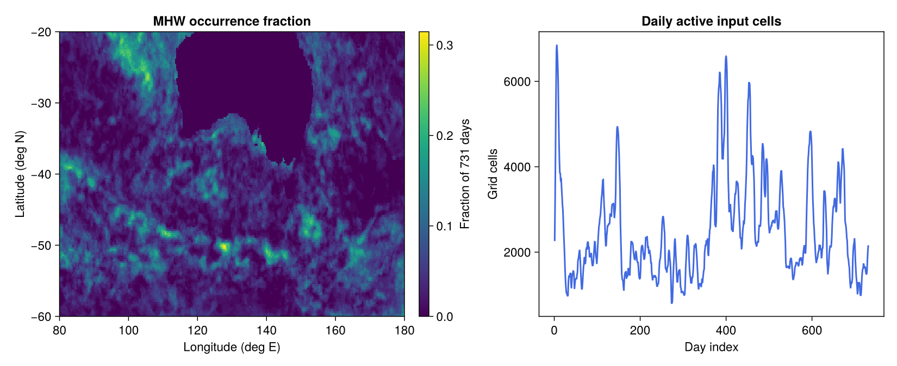
Periodic longitude and depth/time diagonals; exact event membership comparisons.
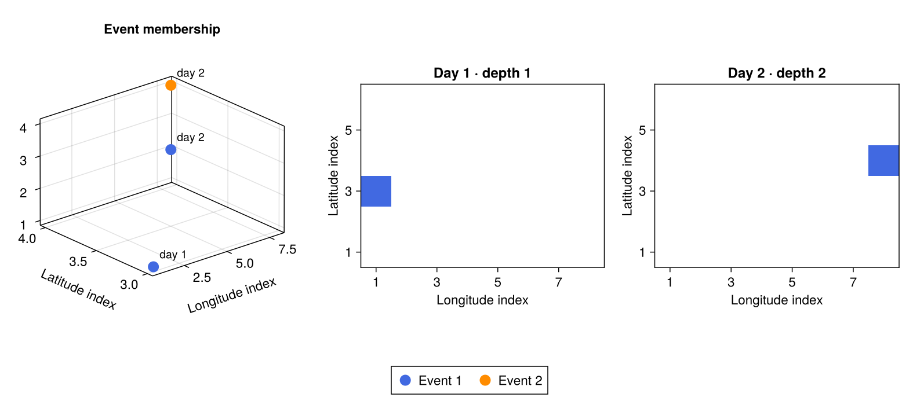
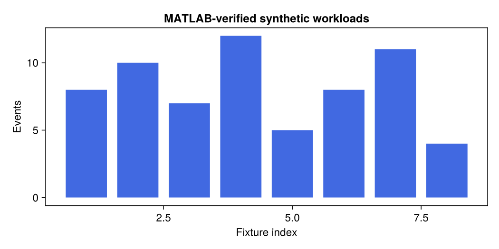
Locations, orientation, and exhaustive connectivity checks for 2,312 seams.
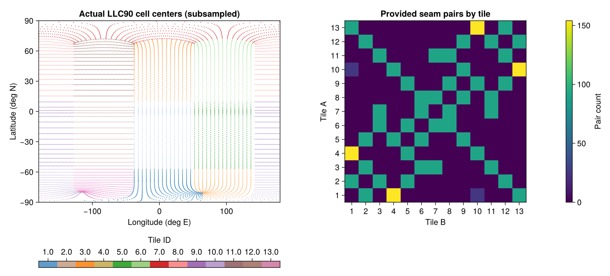
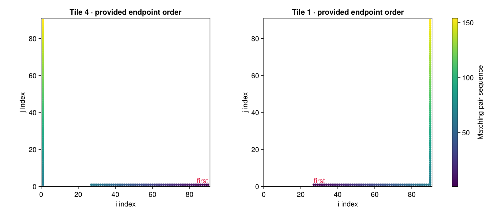
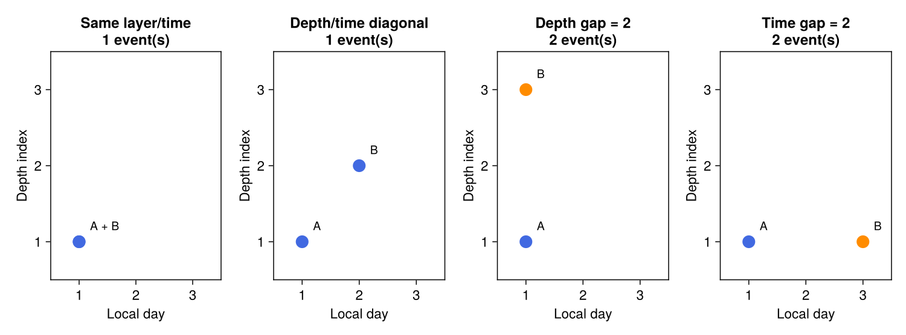
Spatial/temporal sampling of real events and numeric residuals against MATLAB.
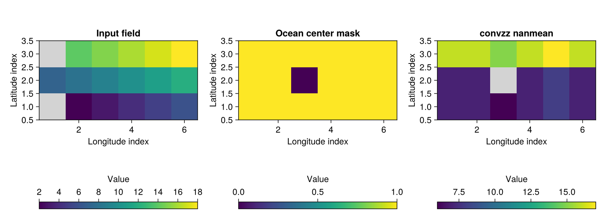
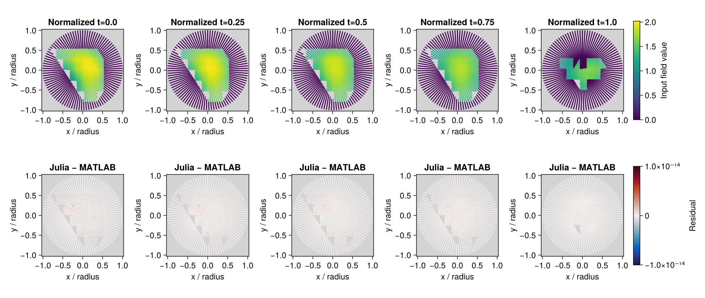
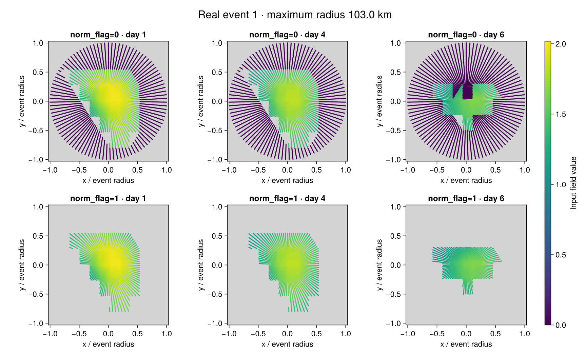
Recomputed MATLAB fixtures, recorded 3-D timings, and current 4-D measurements.
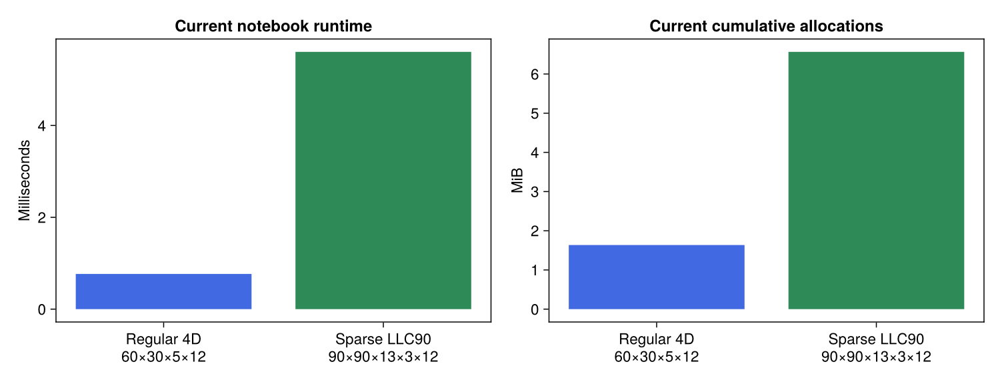
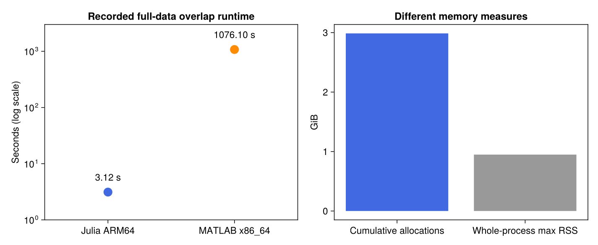
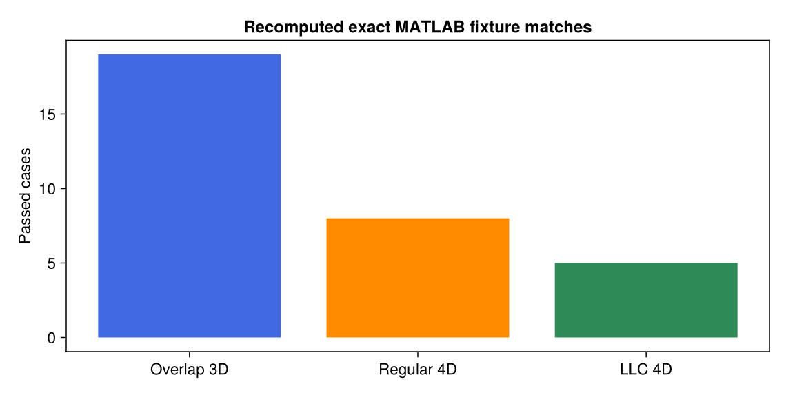
230 days of SST anomaly, both norm_flag modes, five normalized times, and three complete GIF animations.
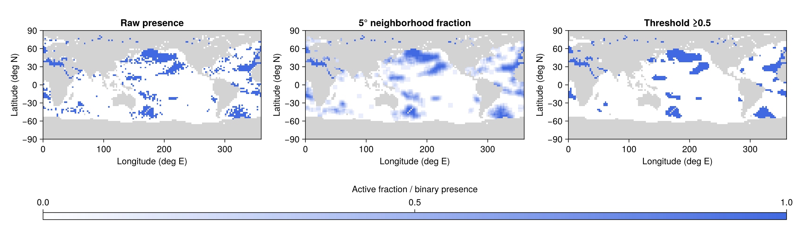
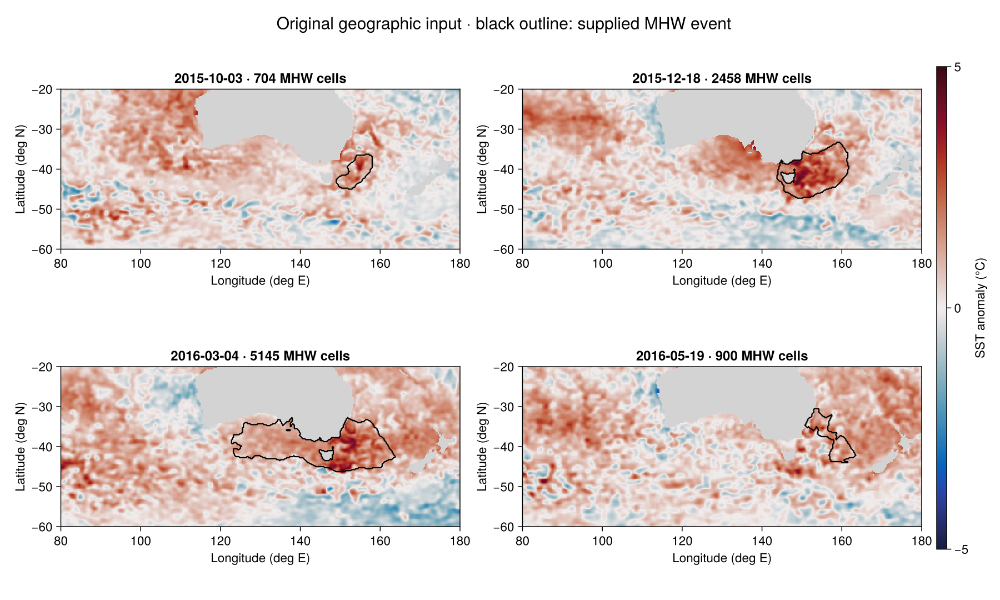
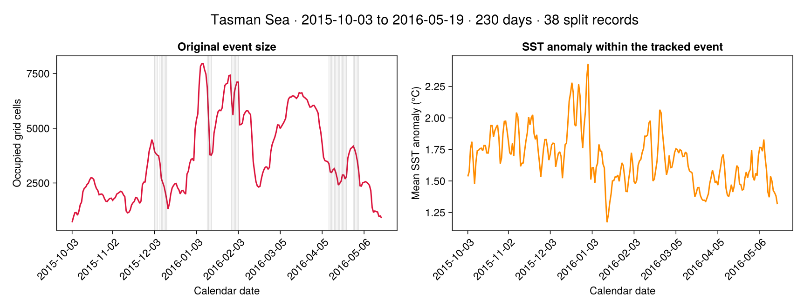
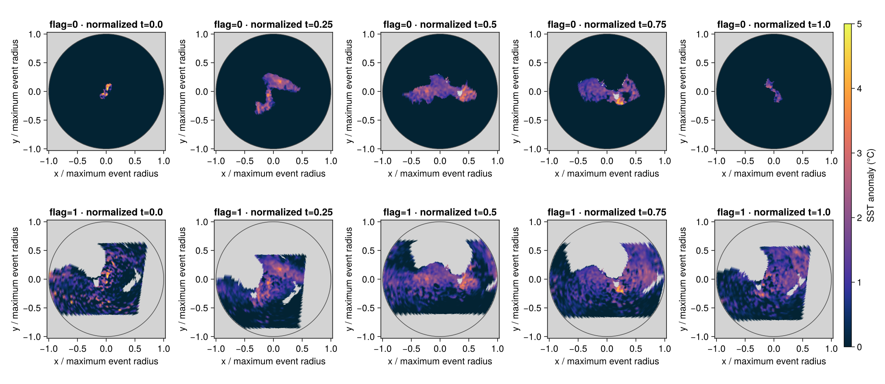
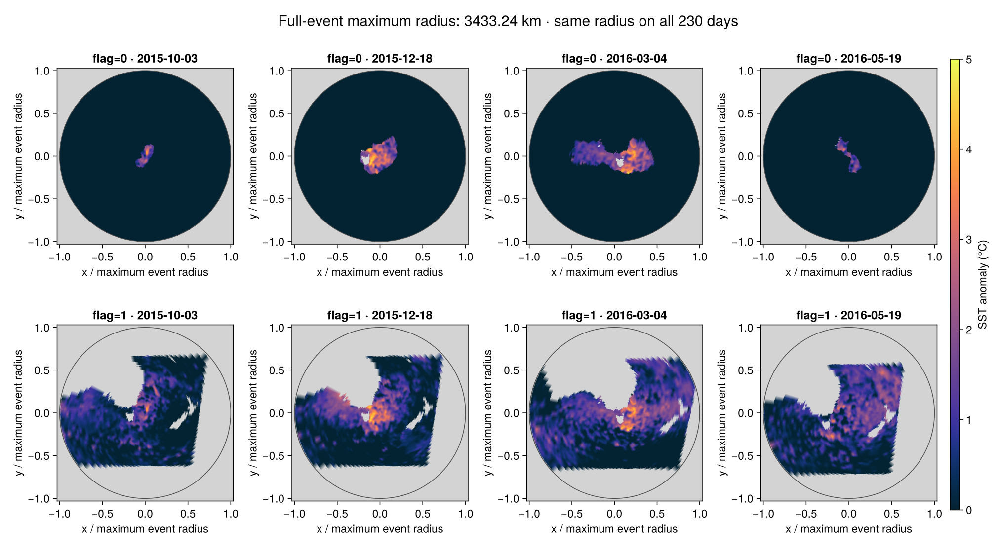